Install the ggvolc package
Install the package using the following commands
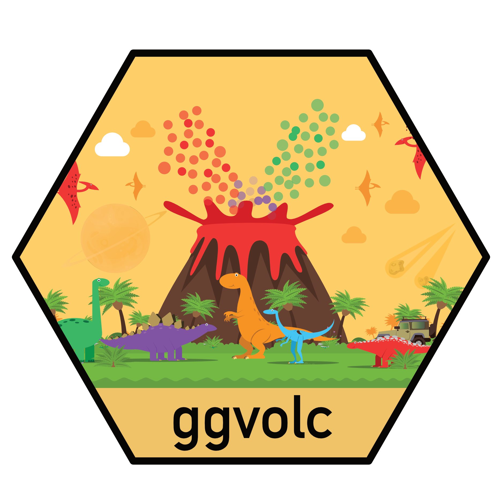
# from CRAN
install.packages("ggvolc")
# or the development version from GitHub
# install.packages("remotes")
remotes::install_github("loukesio/ggvolc")
library(ggvolc)How do I start?
ggvolc turns the results of a differential-expression analysis — from DESeq2, edgeR, or limma — into a clean, publication-ready volcano plot. From there you can highlight genes, auto-label the top hits, attach a gt table, or make the whole thing interactive. Start by loading the library and exploring the two example datasets that ship with the package:
library(ggvolc)
#> Welcome to ggvolc version 0.3.0 !
#>
#> 888
#> 888
#> 888
#> .d88b. .d88b. 888 888 .d88b. 888 .d8888b
#> d88P"88b d88P"88b 888 888 d88""88b 888 d88P"
#> 888 888 888 888 Y88 88P 888 888 888 888
#> Y88b 888 Y88b 888 Y8bd8P Y88..88P 888 Y88b.
#> "Y88888 "Y88888 Y88P "Y88P" 888 "Y8888P
#> 888 888
#> Y8b d88P Y8b d88P
#> "Y88P" "Y88P"
#>data(all_genes) # data.frame that contains the output of differentially expressed genes
head(all_genes,5) # have a look at the first 5 rows
#> genes baseMean log2FoldChange lfcSE stat pvalue
#> 1 GCR1 7201.5782 2.244064 0.2004959 11.192564 4.434241e-29
#> 2 OPI10 1009.4171 -2.257454 0.2096469 -10.767889 4.880607e-27
#> 3 AGA2 249.1173 3.829474 0.3623263 10.569132 4.143136e-26
#> 4 FIM1_1376 5237.5035 2.550409 0.2560379 9.961059 2.256459e-23
#> 5 HMG1 10838.1037 2.214300 0.2229065 9.933763 2.968371e-23
#> padj
#> 1 2.153711e-25
#> 2 1.185255e-23
#> 3 6.707736e-23
#> 4 2.739905e-20
#> 5 2.883475e-20
data(attention_genes) # here is a data.frame with genes that I want to mention to the volcano plot
head(attention_genes,5) # have a look at the first five rows
#> genes baseMean log2FoldChange lfcSE stat pvalue
#> 1 THI13 480.5194 1.585811 0.5219706 3.038122 2.380572e-03
#> 2 FBP1 22710.8428 -2.366733 0.3533032 -6.698871 2.100354e-11
#> 3 TRA1 4491.1343 -1.410696 0.4384316 -3.217595 1.292700e-03
#> 4 YDR222W 591.2289 -4.045918 0.9133881 -4.429572 9.442026e-06
#> 5 BRL1 4434.7712 2.375919 0.5037264 4.716686 2.397176e-06
#> padj
#> 1 1.371582e-02
#> 2 3.290780e-09
#> 3 8.565681e-03
#> 4 1.819838e-04
#> 5 5.850796e-05Created on 2023-08-11 with reprex v2.0.2
1. Plot a simple volcano plot!
Pass a single data frame and every gene is coloured by significance — down, up, or not significant.
ggvolc(all_genes)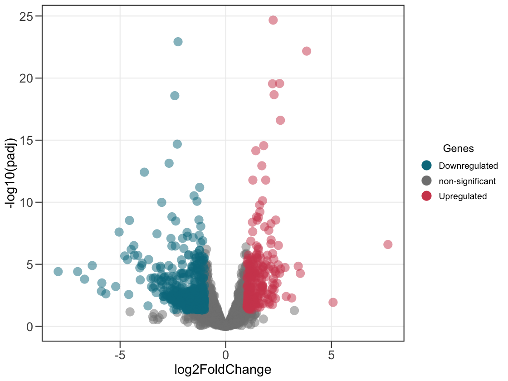
2. Add the genes of attention.
Supply a second data frame to outline and label the genes you care about.
ggvolc(all_genes, attention_genes)3. Add segments to indicate areas of significance.
Turn on add_seg to draw the fold-change and significance thresholds.
ggvolc(all_genes, attention_genes, add_seg = TRUE) +
labs(title="Add segments of significance")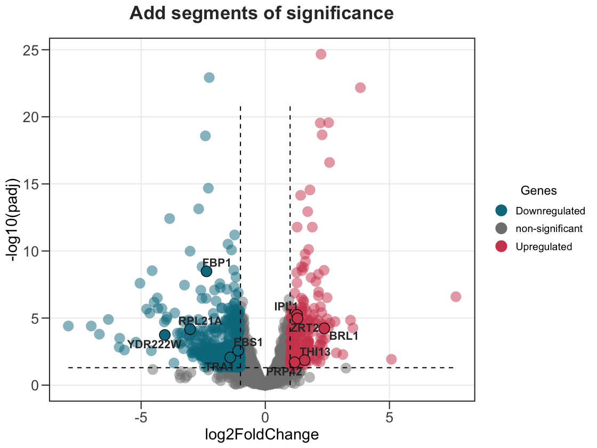
4. Indicate the size of point based on the log2FoldChange column.
Scale point size by effect size with size_var = "log2FoldChange".
ggvolc(all_genes, attention_genes, size_var = "log2FoldChange", add_seg = TRUE)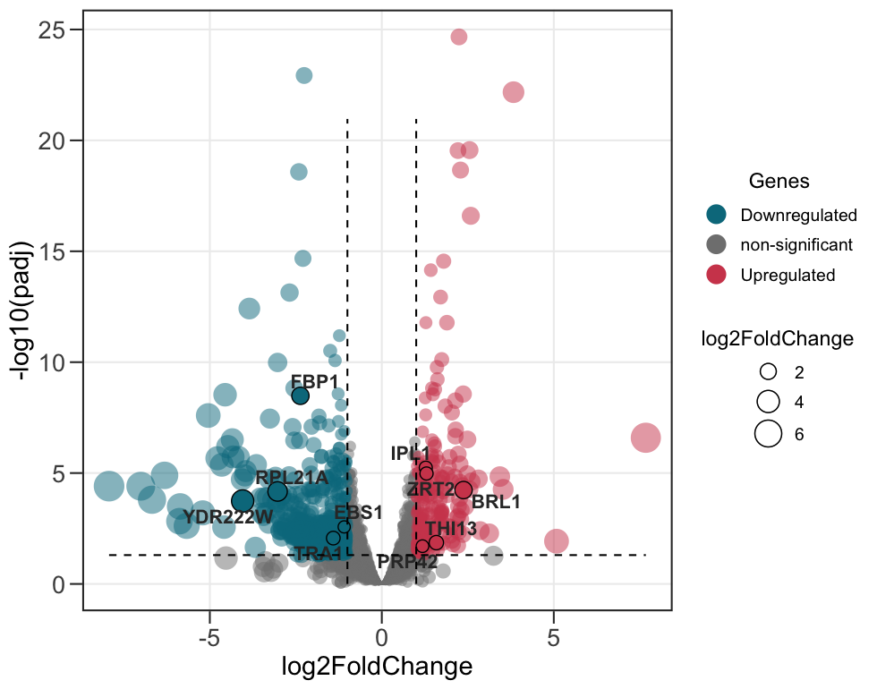
5. Indicate the size of the point based on the pvalue.
Or scale it by significance with size_var = "pvalue".
ggvolc(all_genes, attention_genes, size_var = "pvalue", add_seg = TRUE)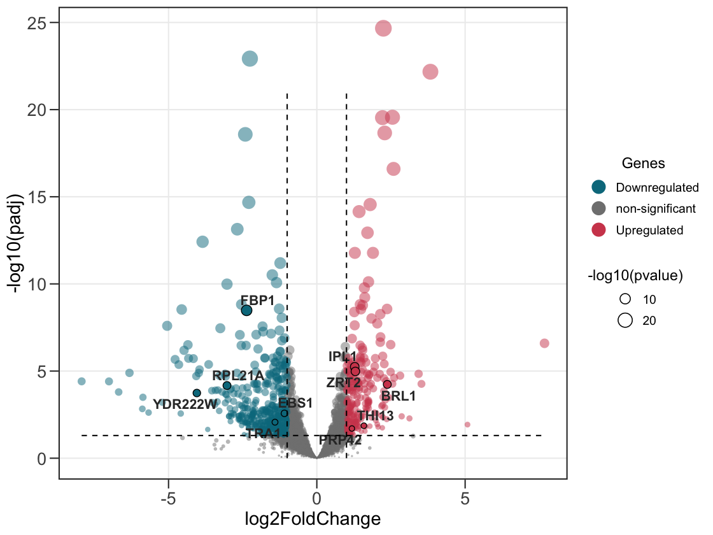
6. Add a table with the genes of interest.
plot <- ggvolc(all_genes, attention_genes, add_seg = TRUE) +
labs(title="Add a table with the genes of interest")
plot %>%
genes_table(attention_genes)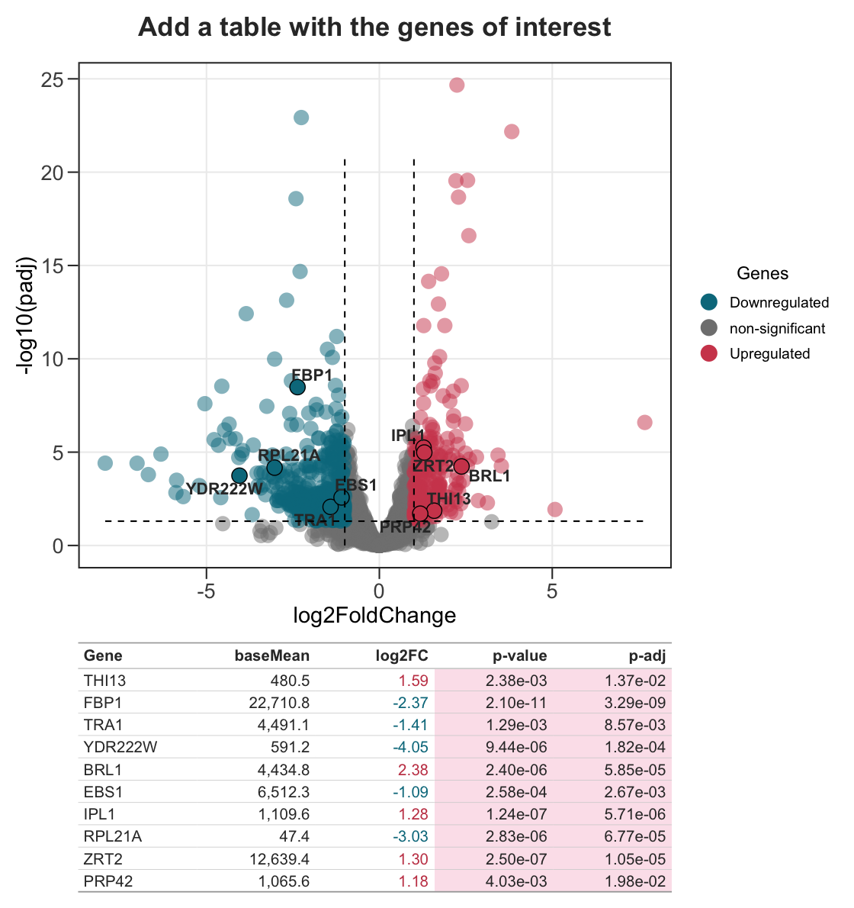
The gene table is rendered with gt and composed with patchwork, so the result is a single object you can style further or save with ggplot2::ggsave().
Instead of curating your own set of genes, you can let genes_table() pick the most significant ones automatically with top_n. Pass the full DE table and it selects the top genes by sig_col (defaults to padj, falling back to pvalue). Use dir = "each" to take the top N up- and down-regulated genes.
plot_top <- ggvolc(all_genes, label_top = 10, add_seg = TRUE) +
labs(title = "Top 10 most significant genes")
plot_top %>%
genes_table(all_genes, top_n = 10)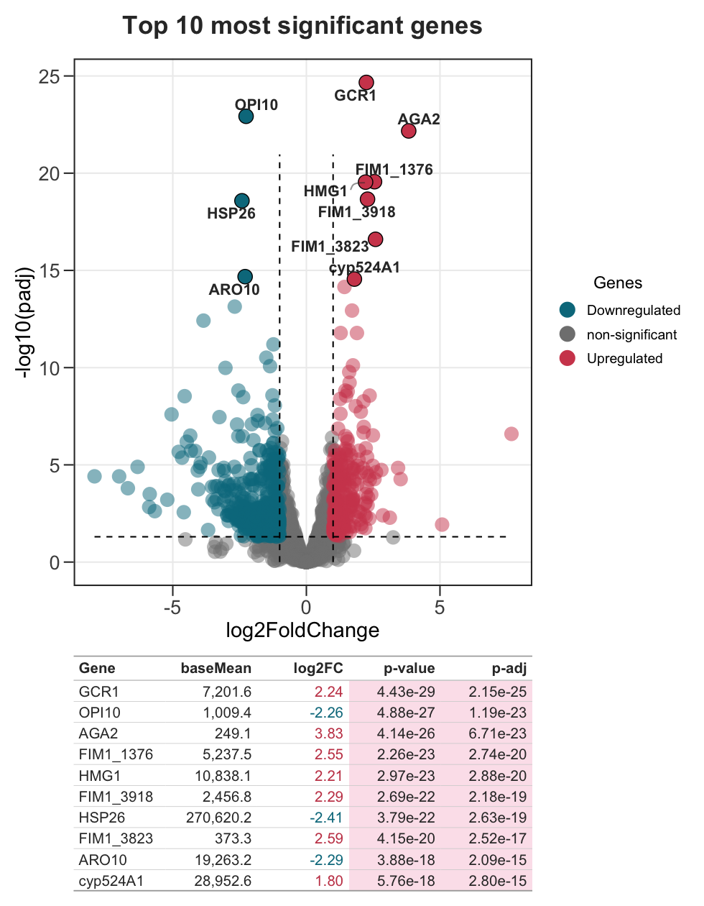
7. Works with DESeq2, edgeR, and limma out of the box
ggvolc() and genes_table() accept the output of all three major differential-expression pipelines directly — column names are auto-detected and mapped internally, so no manual renaming is needed. Gene identifiers held in row names (as edgeR/limma often do) are promoted to a genes column automatically.
| Pipeline | Fold change | p-value | adjusted p | expression |
|---|---|---|---|---|
DESeq2 (results()) |
log2FoldChange |
pvalue |
padj |
baseMean |
edgeR (topTags()) |
logFC |
PValue |
FDR |
logCPM |
limma (topTable()) |
logFC |
P.Value |
adj.P.Val |
AveExpr |
You don’t even need to convert to a table first: pass the result objects themselves and ggvolc extracts every gene for you.
# DESeq2
ggvolc(DESeq2::results(dds)) # or just ggvolc(dds) after DESeq()
# edgeR
ggvolc(edgeR::glmQLFTest(fit, coef = 2))
# limma: choose the coefficient for multi-coefficient fits
ggvolc(limma::eBayes(fit), coef = "treatment")Supported: DESeqResults / DESeqDataSet (DESeq2), TopTags / DGELRT / DGEExact (edgeR), and MArrayLM (limma). de_table() does the conversion if you want the data frame yourself.
The package also ships edger_genes, an example topTags()-style table:
data(edger_genes) # an edgeR topTags()-style table (genes in the rownames)
head(edger_genes, 3)
#> logFC logCPM PValue FDR
#> GCR1 2.244064 12.8143 4.434241e-29 2.153711e-25
#> OPI10 -2.257454 9.9807 4.880607e-27 1.185255e-23
#> AGA2 3.829474 7.9665 4.143136e-26 6.707736e-23
ggvolc(edger_genes, label_top = 8, add_seg = TRUE, title = "edgeR input")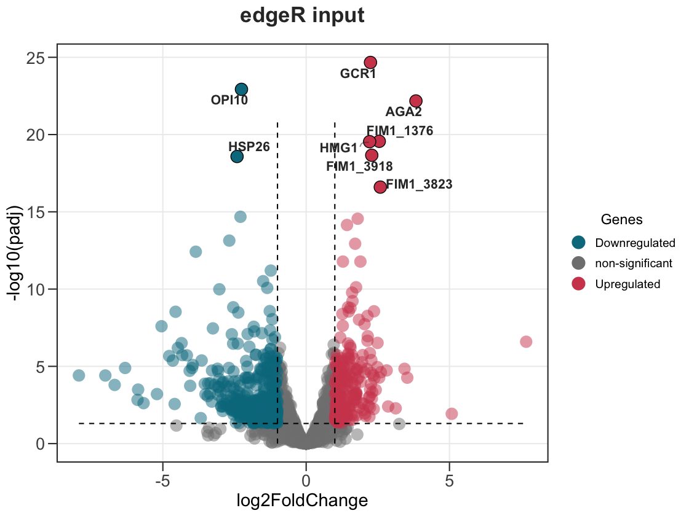
8. Significance on the adjusted p-value (FDR) — the default
ggvolc() calls significance on the adjusted p-value (FDR) by default — the right cutoff for most DE workflows — and the y-axis and the significance line follow along, so the plot stays consistent. Prefer the raw p-value? Set sig_col = "pvalue".
ggvolc(all_genes, add_seg = TRUE) # significance on padj (FDR) by default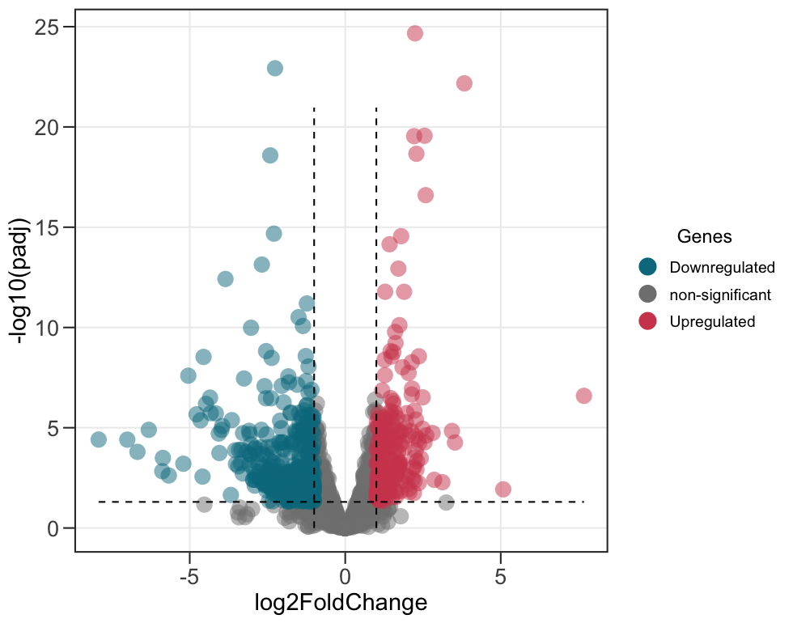
If your table has no adjusted-p column, ggvolc automatically falls back to the raw p-value.
ggvolc() is also robust to p-values of exactly 0 (which DESeq2/edgeR can emit for the strongest genes): instead of silently dropping them, their -log10 value is capped so they stay pinned near the top of the plot.
9. Automatically label the top genes
No need to build a separate data frame — label_top highlights and labels the N most significant genes for you, and label_dir lets you pick the direction.
# top 10 overall
ggvolc(all_genes, label_top = 10, add_seg = TRUE, title = "Top 10 hits")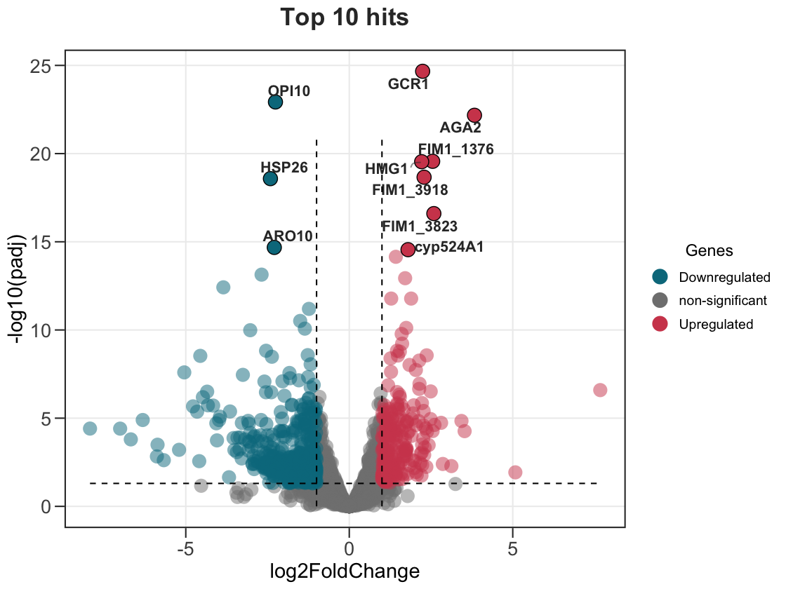
# top 8 up- and top 8 down-regulated
ggvolc(all_genes, label_top = 8, label_dir = "each", add_seg = TRUE,
title = "Top 8 up + 8 down")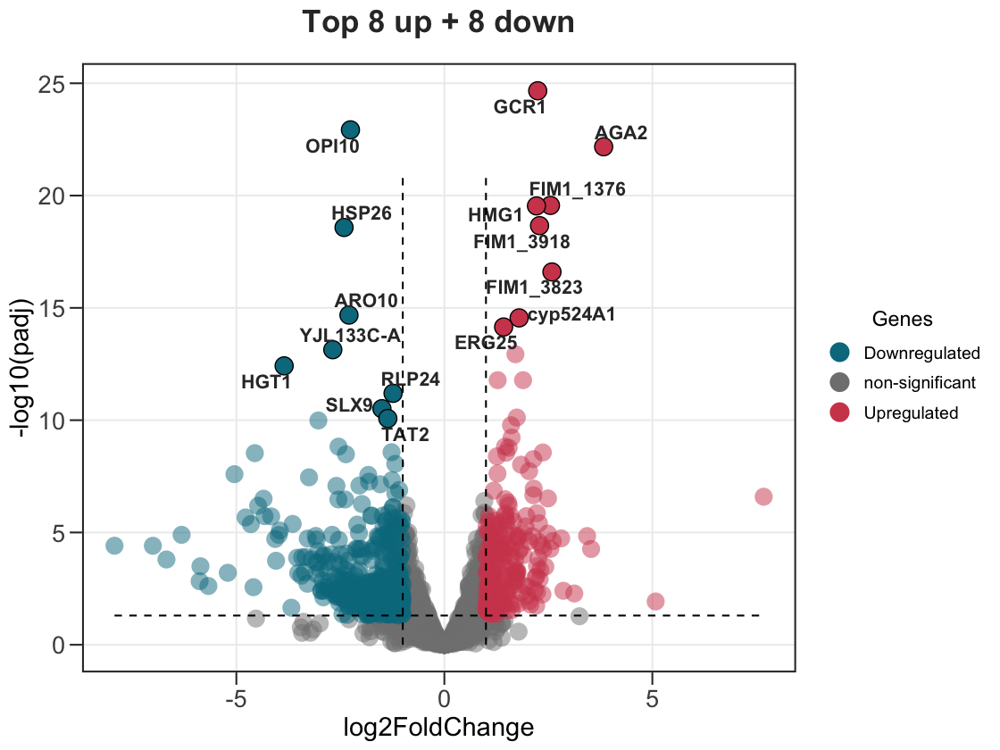
label_dir accepts "both" (default), "up", "down", or "each".
10. Make it interactive
Set interactive = TRUE to get an ggiraph widget — hover any point to see the gene name and its statistics. ggiraph is an optional dependency (install it with install.packages("ggiraph")).
ggvolc(all_genes, attention_genes, interactive = TRUE)Note: GitHub can’t run the widget, so the image below is a static preview. The live, hover-to-inspect version runs in RStudio and on the package website.
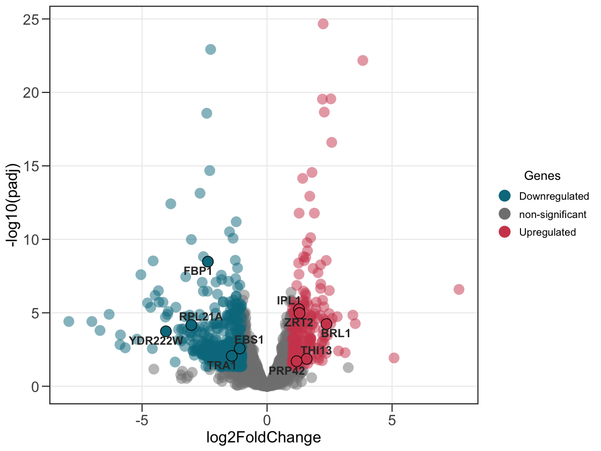
11. Colorblind-safe and ltc palettes
Pick a color preset with palette. ggvolc_palettes() lists them all, including colorblind-safe options and presets taken from the ltc palettes (ltc does not need to be installed).
ggvolc_palettes()
#> palette down not_sig up colorblind_safe source
#> 1 default #00798c #808080 #d1495b FALSE ltc: minou
#> 2 okabe_ito #0072B2 #999999 #D55E00 TRUE Okabe & Ito (2008)
#> 3 rdbu #0571b0 #999999 #ca0020 TRUE ColorBrewer RdBu
#> 4 pantone23 #1F2C43 #B8B8B8 #FFB000 TRUE ltc: pantone23
#> 5 seafarer #013D5A #BDBDBD #E4A25B TRUE ltc: seafarer
#> 6 midnight #075056 #B0B0B0 #FF5B04 FALSE ltc: midnight
#> 7 maya #3d5a80 #A9A9A9 #ee6c4d FALSE ltc: maya
#> 8 trio1 #0E7175 #B0B0B0 #FD7901 FALSE ltc: trio1
ggvolc(all_genes, label_top = 8, label_dir = "each", palette = "okabe_ito",
title = "Colorblind-safe: Okabe-Ito")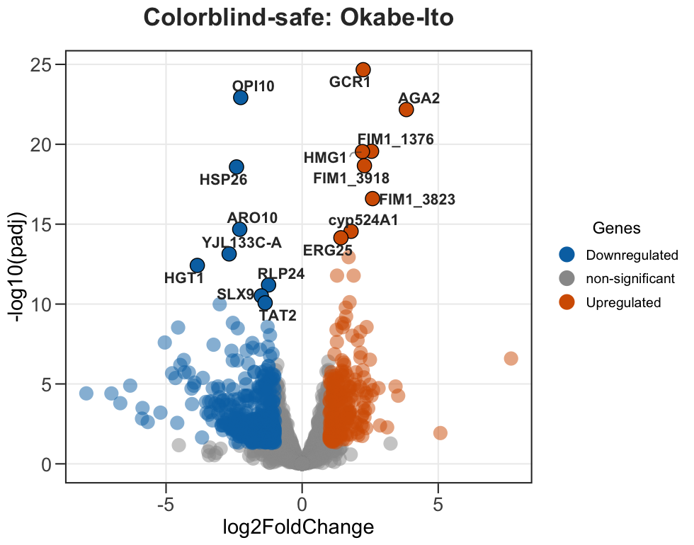
ggvolc(all_genes, label_top = 8, label_dir = "each", palette = "pantone23",
title = "ltc: pantone23")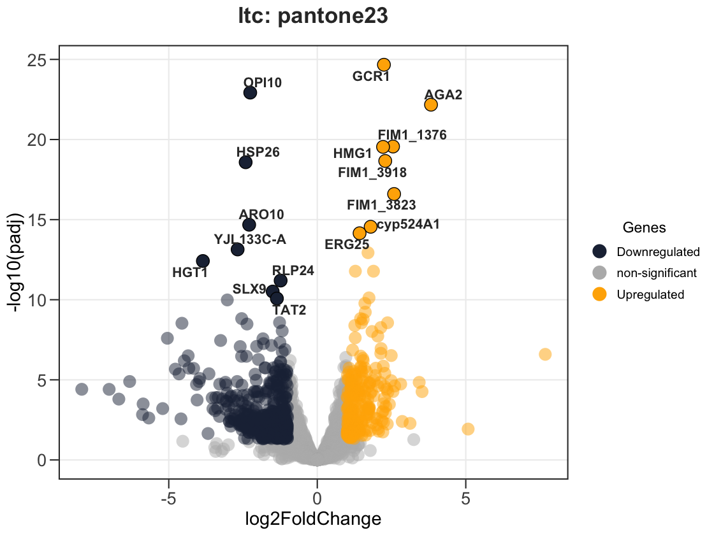
Or pass your own colors, including any ltc palette:
ggvolc(all_genes, palette = c(down = "navy", up = "firebrick"))
pal <- ltc::ltc("maya")
ggvolc(all_genes, palette = c(down = pal[1], up = pal[4]))genes_table() colors the log2FC column to match the plot automatically. Light colors (such as the gold of pantone23) are darkened just enough to stay readable as table text.
12. Count the up- and downregulated genes
ggvolc(all_genes, label_top = 6, show_counts = TRUE, add_seg = TRUE)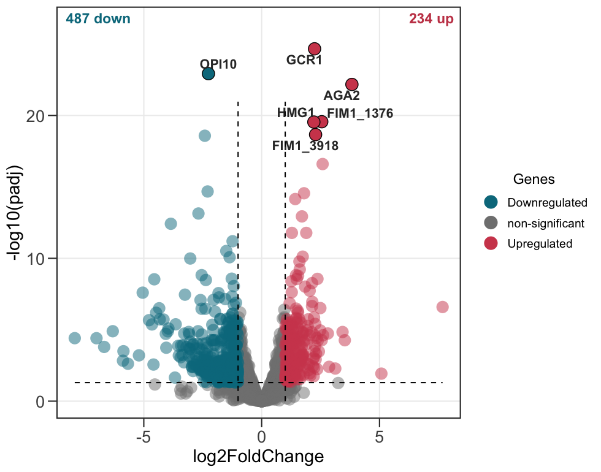
13. Color gene sets
Pass a named list of gene sets (a pathway, a GO term, your own list) to highlight. Each set gets its own color and legend entry.
ribosome <- all_genes$genes[1:15] # stand-ins for real gene sets
stress <- all_genes$genes[200:260]
ggvolc(all_genes, highlight = list(Ribosome = ribosome, Stress = stress))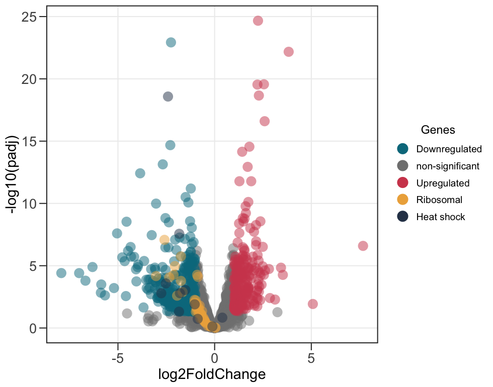
Choose the colors with highlight_colors. data2 also accepts a plain vector of gene names: ggvolc(all_genes, c("GCR1", "HMG1")).
14. Compare contrasts side by side
Give ggvolc() a named list of results to get one panel per contrast on shared axes. label_top and show_counts are applied in each panel, and any mix of DESeq2, edgeR and limma results works.
The package ships stress_timecourse, real DESeq2 results from fission yeast under osmotic stress (Leong et al. 2014): 30, 60 and 180 minutes after stress, each compared with the unstressed cells at 0 minutes. In every panel the x-axis is the log2 fold change against 0 minutes and the y-axis is the significance of that change.
ggvolc(stress_timecourse, label_top = 5, show_counts = TRUE, add_seg = TRUE)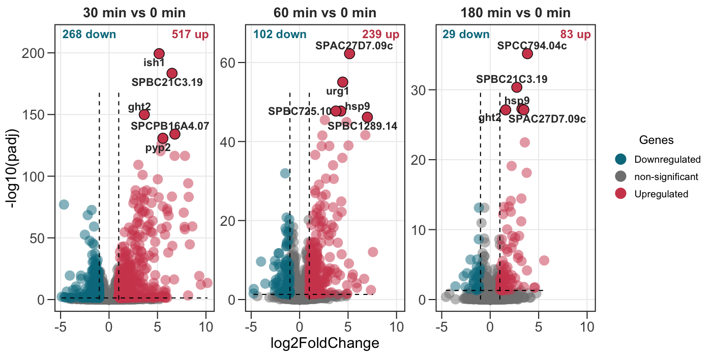
The fold-change axis is shared, so effect sizes compare directly, while each panel uses its own height for significance; the counts in the corners show the response peaking at 30 minutes and fading by 180. Use facet_scales = "fixed" to share the y-axis as well.
Genes that DESeq2 leaves without an adjusted p-value (low-count or outlier genes) are left out of the plot, with a message saying how many.
Learn more
- 📖 Package website — full function reference and a getting-started article with every example (including the live interactive volcano).
- 🐳 Docker image —
docker pull ghcr.io/loukesio/ggvolc:latestfor a ready-to-run RStudio environment withggvolcpre-installed. - 🐛 Issues & questions — bug reports and feature requests are welcome.